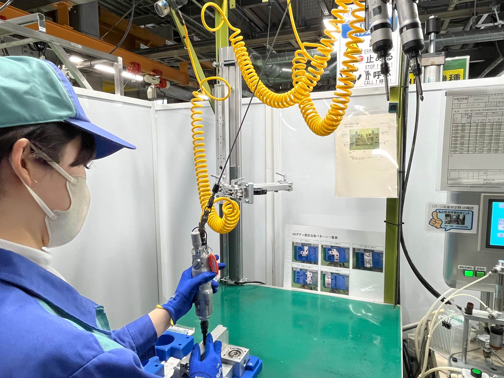
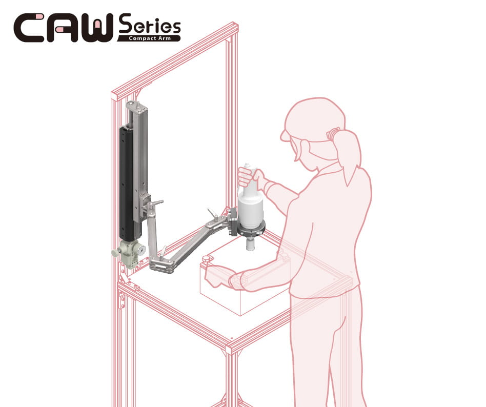
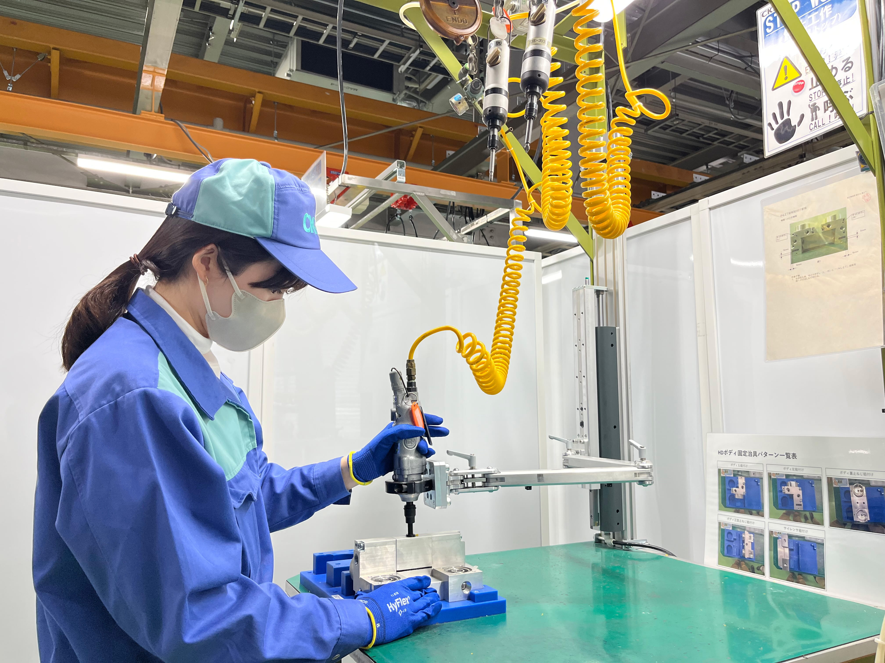

ナットランナーでのねじ締付け作業の負担軽減
CKD株式会社 小牧工場

CKD組立現場でのねじ締付作業改善事例をご紹介します。約1kgのナットランナーを使用し、製品へねじの締付けをしていますが、繰り返し作業により作業者が肩、腕、手首の負担を感じておりました。
課 題

無理な姿勢での作業、身体負担が大きい
従来は吊り下げ式のスプリングバランサを使用し、1日に約40回ねじ締め作業をしておりました。
・ 肩より上の場所から工具を取るため、作業の度に工具を引き下げる動きは肩への負担が大きい
・ 工具はそれほど重くはないけれど、作業回数が多いので肩、腕、手首の負担を感じる
・ ネジ締め時の振動が大きく、手首に負担がかかる
という作業者の声がありました。
1日の作業頻度が多く、作業者の負担軽減と作業効率向上が課題でした。
採用のきっかけ

自社開発をきっかけにねじ締め作業の見直し
ツール・工具等をサポートするコンパクトなエアバランサが自社で開発されたことをきっかけにこれまで優先度高く対策ができていなかったねじ締め作業の改善に取り組みました。
コンパクトアームは以下の特徴があり、課題が解決できると思い、社内でも導入を決めました。
・ エアバランサのため手を放しても工具がその場で止まっているので、水平方向から工具を取ることができ、肩を上げる必要がない
・ 低摺動シリンダを搭載しており、小さな力で操作ができる
・ 吊り下げ式に比べ、工具から発生する振動や反力を抑制する構造になっている
また取付幅60mmのアルミフレームに取付けができるため、設置が簡単にできることも導入を後押ししました。
導入後の効果

作業者への身体的負担を大幅改善、さらに、作業性アップにも
コンパクトアーム導入により作業者の作業姿勢が改善され、疲労が軽減しました。
現場からも「肩を上げる必要がなく工具を操作できるため、肩の負担は格段に軽くなってる」「ねじ締め時の振動が小さくなったので作業がしやすくなった。手放せない。」という声が挙がっております。
また、バランサが垂直に動くので、垂直にねじ締めが行えるため、小さなネジも正確に締め込められるようになったという作業性アップの効果もありました。